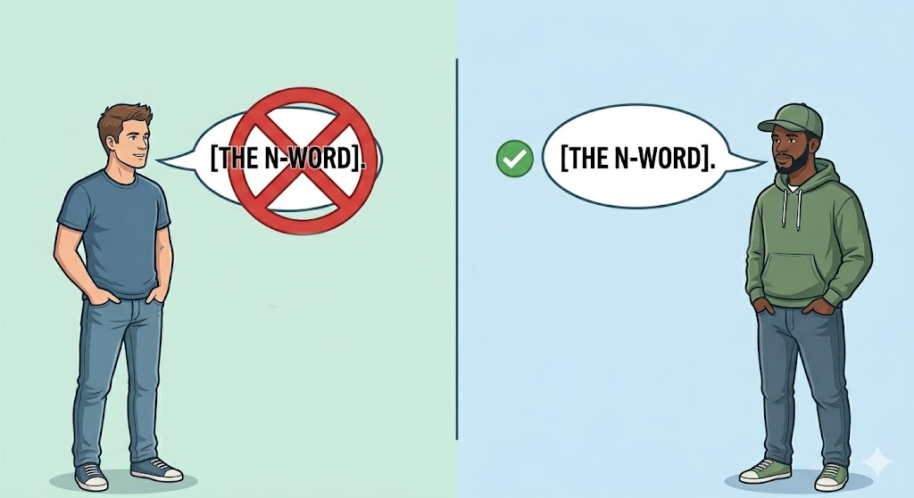

"All animals---including humans---are equal, but some animals are more equal than others"

"I have a dream that my four little children will one day live in a nation where they---and what they say---will not be judged by the color of their skin but by the content of their character."
The phrase "The 'Wit' of it" generally refers to the cleverness, humor, or intellectual ingenuity underlying a specific situation, remark, or solution.
It highlights the sharp, amusing, or surprisingly smart aspect of something, emphasizing the, often,unexpected "brilliance" or irony involved.